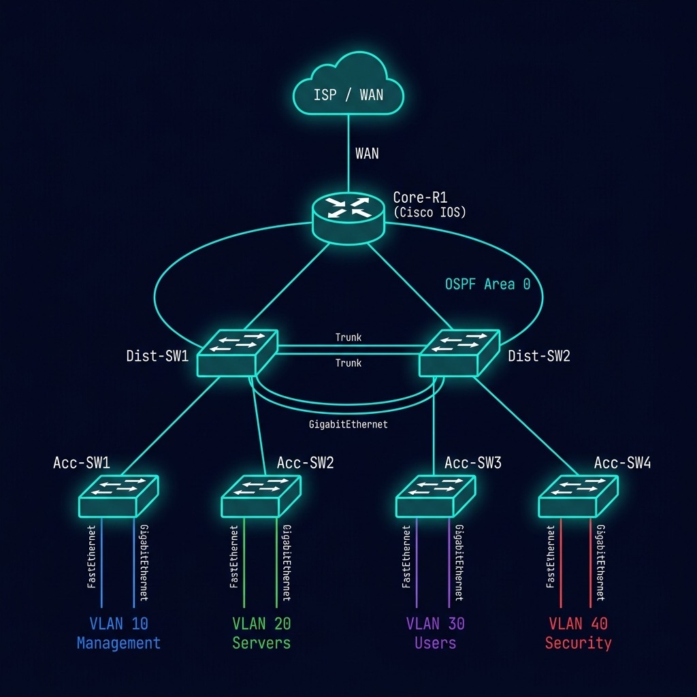

Cisco IOS
OSPF
VLANs
VLAN Segmentation & OSPF Routing: A Full Lab Walkthrough
Al Hafiz Taufikur Rohman
May 2025
12 min read
Lab Topology Overview
This lab simulates an enterprise campus network with a three-tier hierarchy: Core, Distribution, and Access layers. All devices are Cisco IOS running in GNS3.

VLAN Design
| VLAN ID | Name | Subnet | Purpose |
|---|
| VLAN 10 | Management | 10.10.10.0/24 | Network device management |
| VLAN 20 | Servers | 10.20.20.0/24 | Internal server farm |
| VLAN 30 | Users | 10.30.30.0/24 | Staff workstations |
| VLAN 40 | Security | 10.40.40.0/24 | Security cameras & IoT |
Step 1 — Configure VLANs on Distribution Switches
On both Dist-SW1 and Dist-SW2, create the VLAN database:
Dist-SW1# configure terminal
Dist-SW1(config)# vlan 10
Dist-SW1(config-vlan)# name Management
Dist-SW1(config-vlan)# exit
Dist-SW1(config)# vlan 20
Dist-SW1(config-vlan)# name Servers
Dist-SW1(config-vlan)# exit
Dist-SW1(config)# vlan 30
Dist-SW1(config-vlan)# name Users
Dist-SW1(config-vlan)# exit
Dist-SW1(config)# vlan 40
Dist-SW1(config-vlan)# name Security
Dist-SW1(config-vlan)# exit
Step 2 — Configure 802.1Q Trunk Links
The uplink from each distribution switch to Core-R1 must carry all VLANs as a trunk:
Dist-SW1(config)# interface GigabitEthernet0/1
Dist-SW1(config-if)# description Trunk to Core-R1
Dist-SW1(config-if)# switchport mode trunk
Dist-SW1(config-if)# switchport trunk encapsulation dot1q
Dist-SW1(config-if)# switchport trunk allowed vlan 10,20,30,40
Dist-SW1(config-if)# no shutdown
Verify trunk status: Use show interfaces trunk to confirm the port is in trunk mode and all 4 VLANs appear in the "VLANs allowed and active" column.
Step 3 — Router-on-a-Stick (Inter-VLAN Routing)
Core-R1 uses subinterfaces on a single physical trunk link to route between all VLANs. Each subinterface is assigned a VLAN encapsulation and acts as the default gateway for that VLAN.
Core-R1(config)# interface GigabitEthernet0/0.10
Core-R1(config-subif)# encapsulation dot1q 10
Core-R1(config-subif)# ip address 10.10.10.1 255.255.255.0
Core-R1(config-subif)# description Gateway_VLAN10_Management
Core-R1(config)# interface GigabitEthernet0/0.20
Core-R1(config-subif)# encapsulation dot1q 20
Core-R1(config-subif)# ip address 10.20.20.1 255.255.255.0
Core-R1(config-subif)# description Gateway_VLAN20_Servers
Core-R1(config)# interface GigabitEthernet0/0.30
Core-R1(config-subif)# encapsulation dot1q 30
Core-R1(config-subif)# ip address 10.30.30.1 255.255.255.0
Core-R1(config-subif)# description Gateway_VLAN30_Users
Core-R1(config)# interface GigabitEthernet0/0.40
Core-R1(config-subif)# encapsulation dot1q 40
Core-R1(config-subif)# ip address 10.40.40.1 255.255.255.0
Core-R1(config-subif)# description Gateway_VLAN40_Security
Step 4 — OSPF Area 0 Configuration
All routers participate in OSPF Area 0 (backbone) to share routing information dynamically:
Core-R1(config)# router ospf 1
Core-R1(config-router)# router-id 1.1.1.1
Core-R1(config-router)# network 10.10.10.0 0.0.0.255 area 0
Core-R1(config-router)# network 10.20.20.0 0.0.0.255 area 0
Core-R1(config-router)# network 10.30.30.0 0.0.0.255 area 0
Core-R1(config-router)# network 10.40.40.0 0.0.0.255 area 0
Core-R1(config-router)# passive-interface default
Core-R1(config-router)# no passive-interface GigabitEthernet0/1
# Only the WAN-facing interface sends OSPF hellos
Step 5 — Verify Reachability
A PC in VLAN 30 (Users) should now be able to reach a server in VLAN 20 (Servers) through Core-R1:
PC-Users> ping 10.20.20.100
84 bytes from 10.20.20.100 icmp_seq=1 ttl=63 time=2.1 ms
84 bytes from 10.20.20.100 icmp_seq=2 ttl=63 time=1.9 ms
84 bytes from 10.20.20.100 icmp_seq=3 ttl=63 time=2.0 ms
Core-R1# show ip ospf neighbor
Neighbor ID Pri State Dead Time Address Interface
2.2.2.2 1 FULL/DR 00:00:38 10.10.10.2 GigabitEthernet0/0.10
Key Takeaways
- VLAN segmentation limits broadcast domains and improves security between user groups
- 802.1Q trunks must be configured on both ends of a link before VLANs can traverse it
- OSPF
passive-interface default is a best practice — only advertise OSPF where needed
- TTL of 63 (instead of 64) in ping output confirms traffic is being routed through Core-R1
Have questions about this topology or want to see the full GNS3 project file? Reach out on GitHub.